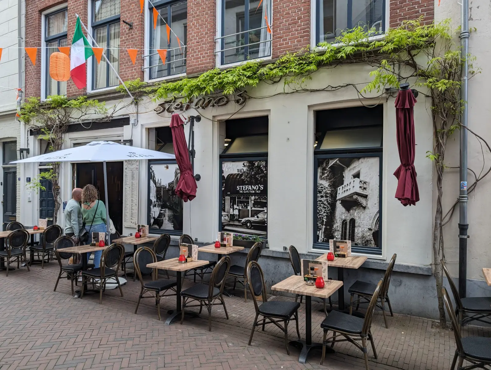

Pizza, pasta e più in de Stoofstraat
Heerlijke pizza's, pasta's en antipasti in een ongedwongen sfeer met Italiaans karakter. Dagelijks vanaf 16.30 uur.
Dagelijks open vanaf 16.30 uur
Wie sfeer komt proeven, begrijpt waarom
Je bent bij Stefano's aan het juiste adres voor heerlijke pizza's, pasta's en antipasta. Naast de welbekende pizza's serveren wij ook specialiteiten van het huis. Verder bieden we je een ongedwongen sfeer met Italiaans karakter.
Stefano's is niet voor niets de meest bezochte Italiaan van 's-Hertogenbosch. Wie (sfeer) komt proeven, begrijpt waarom. Tot zo!

Afhalen
Geef je bestelling telefonisch door en kom deze warm afhalen in de Stoofstraat.
Bel 073 689 05 51Bezorgen
Liever thuis genieten? Bestel online en laat je pizza of pasta bezorgen.
Bestellen via BullarooReserveren
Bij Stefano's willen we ervoor zorgen dat iedereen kan genieten van een heerlijke maaltijd in een ontspannen sfeer.
Bel 073 689 05 51Telefonisch reserveren kan dagelijks vanaf 15.00 uur.
- Met 5 personen of meer? Dan raden we aan om vooraf te reserveren. Bel ons even.
- Met minder dan 5 personen? Reserveren is niet nodig, loop gewoon binnen. We doen ons best om je zo snel mogelijk een tafel te geven.
Tot zo!
- Adres
- Stoofstraat 10
5211 ER 's-Hertogenbosch - Telefoon
- 073 689 05 51
- info@stefano-s.nl
Openingstijden
| Maandag | 16.30 - 21.00 |
|---|---|
| Dinsdag | 16.30 - 21.00 |
| Woensdag | 16.30 - 21.00 |
| Donderdag | 16.30 - 21.30 |
| Vrijdag | 16.30 - 21.30 |
| Zaterdag | 16.30 - 21.30 |
| Zondag | 16.30 - 21.00 |